R&D case study · 2026
A production pipeline that turns the 3D model of a building into social-ready campaign assets — stills, copy, formats and languages — with a quality gate that protects the architecture and a cost line for every piece.
Built as ComfyUI custom nodes, so the whole thing runs as one graph instead of a person gluing scripts together. Every number on this page comes from a run log, a billing feed or a tool response.
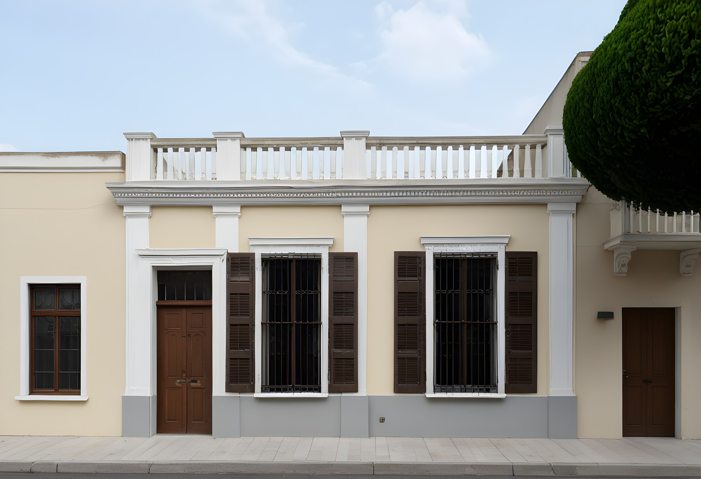
The problem
A developer marketing a building has one 3D model and needs fifty pieces of content: the street shot, the patio at dusk, the aerial, each of them cropped for feed, story and link, each in the languages the audience speaks, each with copy that does not invent a second bathroom.
Hand-rendering that is slow. Prompting an image model is fast and produces a building that does not exist — which, in real estate, is not a style problem. An image that adds a balcony is a legal one.
So the interesting question is not "can a model make a pretty house". It is: can a pipeline be fast and still be held to the geometry of the actual project — and can it prove it, per image, in numbers a team would accept.
This project is the attempt. It renders a house from a data spec, drives the generative models with signals taken from the geometry itself, and then measures the result against that same geometry before anything reaches a layout.
Headline numbers
Sources: out/runs.jsonl, the Comfy Cloud billing feed, docs/costs.md. Local time is measured with nvidia-smi sampling (power draw × duration), priced at $0.10/kWh.
The pipeline
The whole thing runs inside ComfyUI: 22 nodes, from the 3D scene to a finished social asset and a line in the run log. Six of those nodes are custom; the rest are stock. The custom ones are deliberately thin — each calls the same Python module the command-line pipeline uses, so the graph and the batch script cannot drift apart.
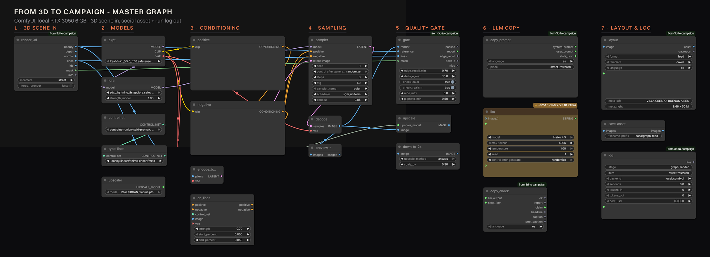
| Stage | Nodes | What happens |
|---|---|---|
| 1 · 3D scene in | render_3d | Renders the house from scene/house.json and hands the graph beauty, depth, normals, lines and a house mask. Content-hash cached. |
| 2 · Models | ckpt · lora · controlnet · upscaler | RealVisXL V5, SDXL-Lightning 8-step LoRA, xinsir ControlNet Union, Real-ESRGAN. Loaded once. |
| 3 · Conditioning | positive · negative · encode_beauty · cn_lines | The beauty pass is VAE-encoded as the starting latent (denoise 0.85); the line pass drives ControlNet at 0.70. |
| 4 · Sampling | sampler · decode | 8 steps, CFG 1.0, euler / sgm_uniform. |
| 5 · Quality gate | gate · upscale · down_to_2x | Edge recall, ΔE after white balance, NIQE, CLIP photo-vs-CG. Then 4× Real-ESRGAN and back down to 2×. |
| 6 · Copy | copy_prompt · llm · copy_check | A system prompt built from the brand voice and a fact whitelist, then JSON validation with character limits. |
| 7 · Layout & log | layout · save_asset · log | The designed asset, plus one line in runs.jsonl with seconds, tokens and cost. |
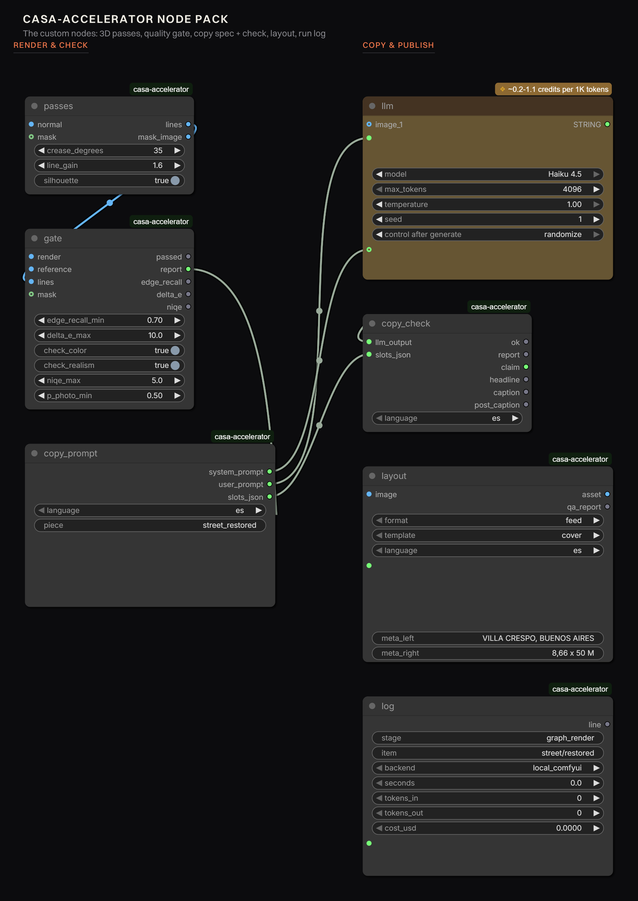
They are the part of the pipeline that is ours: render the 3D passes, gate the result, build the copy prompt, check what the LLM returned, lay out the asset, log the run. Everything else is stock ComfyUI.
A note on Load3D: it looks like the obvious way to bring a GLB into the graph, and it does not work here. It renders in the browser frontend, so a headless or queued run produces nothing. Hence CasaRender3D, which shells out to the same Playwright exporter the CLI uses.
Control signals
The house is a data spec in metres, turned into geometry by code. That means the renderer can emit passes that a photograph could never carry: exact depth, view-space normals, a material-ID map with no anti-aliasing, and a line map built from G-buffer discontinuities — an ID change, a relative depth jump, or a normal crease of 35° or more.
Lines from geometry, not Canny on the beauty: textures, shadows and foliage never produce a false edge. The same passes are used three times over — to control the render, to measure it afterwards, and to decide where type can sit on the finished image.
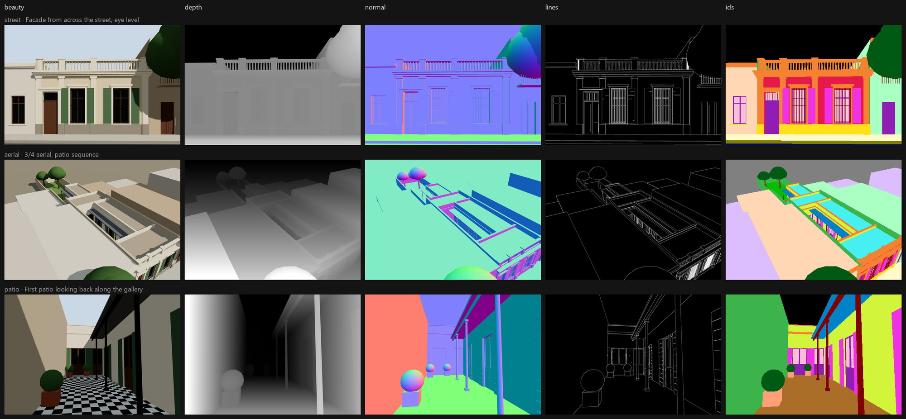
MiDaS convention, with a per-camera range. The first version let the near asphalt eat the whole grey range and the building flattened out.
Driven by a line ControlNet alone, SDXL kept the facade's rhythm and invented a second storey with a balcony: edge recall 0.51–0.63, three of three rejected. A line map is a silhouette plus creases — nothing in it fixes how tall the building is.
Depth, or the beauty pass itself as a starting latent or reference image. With beauty at denoise 0.85 plus lines at 0.70: edge recall 0.79–0.88, gate PASS.
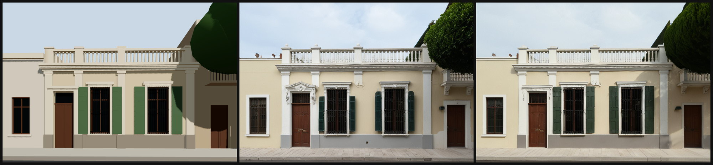
Model choice
Two seeds each, same prompt, same control signal where the architecture allowed it. Cold start is the higher number in each pair; warm runs settle at about 4 GPU seconds.
| Model | Approach | GPU s | $/image | Edge recall | Verdict |
|---|---|---|---|---|---|
| Z-Image Turbo + Fun ControlNet Union | ControlNet, 8 steps | 3.8–8.9 | 0.004–0.009 | 0.90–0.92 | Best geometry; colour follows the prompt, not the brand. |
| FLUX.2 klein 9B | Reference edit, 4 steps | 2.7–14.3 | 0.003–0.014 | 0.72–0.77 | Winner — best materials and palette. |
| Qwen-Image + InstantX ControlNet | ControlNet, 4 steps | 2.4–13.3 | 0.002–0.013 | 0.63–0.68 | Most ornate, drifts most — invented a door. |
| RealVisXL + ControlNet Union | Local parity run | 63 s local | 0.0001 | 0.79–0.88 | The free draft tier; flatter light. |
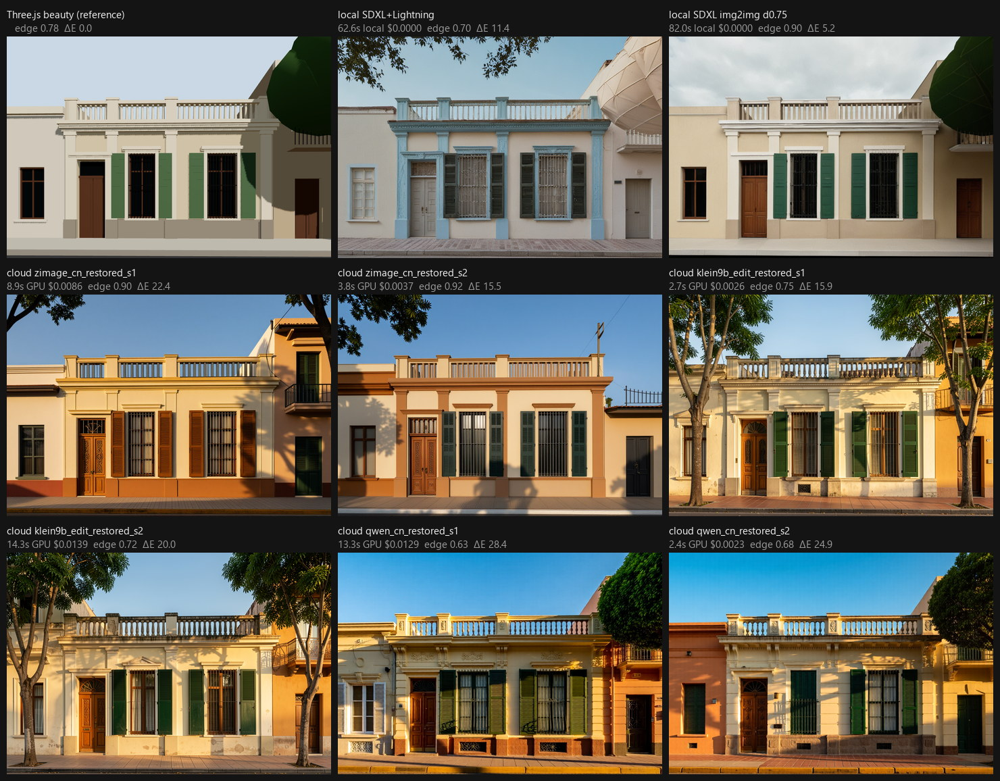
Given the beauty pass as a reference, FLUX.2 klein carries the palette (ΔE 2.2–6.8). ControlNet models follow the text prompt instead and drift to whatever "warm plaster" means to them (ΔE 15–22). Adding the inverted line drawing as a second reference raised geometry from 0.75 to 0.77.
Not a ControlNet problem. Dropping from 30 to 20 steps took a local render from 213 s to 128 s; dropping the second ControlNet saved ~20 % at 30 steps and nothing at 20. The SDXL-Lightning LoRA — 8 steps, CFG 1, so no unconditional pass — took it to 63 s. Same gate verdicts, 3.4× faster.
The quality gate
Every render is measured against the geometry it came from, before anything else happens to it. Four metrics, each answering a different question, each with a threshold in config/qa.json so the gate is configuration, not code.
| Metric | Question | What we learned |
|---|---|---|
| Edge recall vs the 3D line map (±2 px, inside the house mask) | Is this the same building? | Works. Catches drift and invented openings. There is a ceiling: the beauty pass itself only scores 0.78 against its own lines, so the threshold lives at 0.70. |
| ΔE (CIE76, Lab) after gray-world white balance | Is this the brand's palette? | Works with caveats. Needs a coverage floor — on the aerial the facade is 0.37 % of the frame — and a looser threshold at dusk, where illuminants are mixed. Fails when one hue dominates. |
| NIQE (pyiqa) | Does this read like a photograph? | The best photo-vs-CG separator we found: beauty 9.8, local img2img 3.5–5.8, cloud edit ~2.9, text-to-image ~2. |
| CLIP zero-shot photo vs render | Same, cheaply | Saturated — 0.97–0.99 for nearly everything. Kept as a coarse filter, not as a discriminator. |
| LAION aesthetic | Is it nice? | Barely moves on architecture (4.8–5.8). Logged, never gated. |
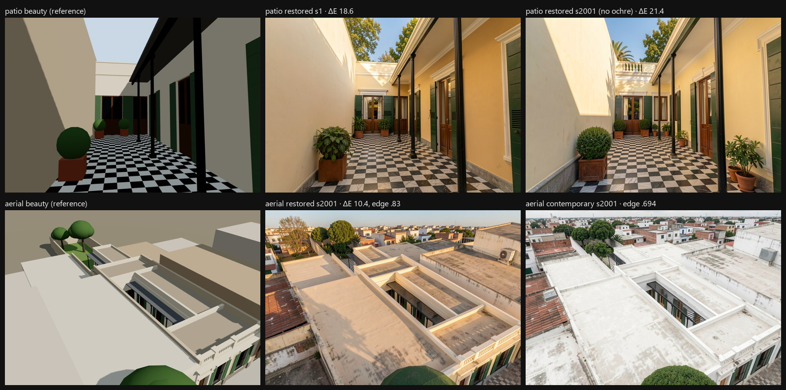
Copy
Copy is written by Claude Haiku 4.5 through ComfyUI's partner node. The system prompt is built by a node from the brand voice and a fact whitelist: you may use these numbers and nothing else; if a fact is not in this list, it does not exist. Each slot carries a character limit, because a headline is a layout constraint, not a suggestion.
Run 1, three languages, 1.34 credits — rejected in all three. Not the model's fault: the prompt showed the JSON schema as though it were the object to return, so the model answered with the schema. The validator caught it as "expected a string, got dict", plus every character limit. The fix was a literal example object and a separate list of limits.
Run 2: EN and PT passed; ES failed by 8 characters. One repair call — the rejected JSON plus the list of issues, 0.45 credits — came back at 88 characters. Three languages, one repair: 1.79 credits ≈ $0.0085.
Sample output (ES, after repair)
claim — la casa respira con la calle
headline — fachada original, 1890
caption — Postigos verdes y puerta tallada. La casa chorizo mira hacia Villa Crespo desde su reja.
cta — conocé la casa
Design system
The first version of the composer put type on a picture and called it a post. It was rejected, correctly: anyone could do that in two minutes. What replaced it is a design system in code — a 12-column grid, a 9 px baseline, a type scale with its own tracking and leading, platform-UI safe zones for stories, and a brand mark drawn from code rather than a file.
And because it is code, it can be checked. Every text block is measured for WCAG contrast against the pixels actually behind it, for minimum type size, and — the one that caught the real bug — for collisions with other blocks.
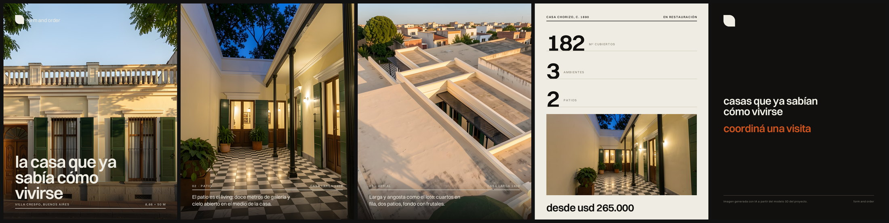
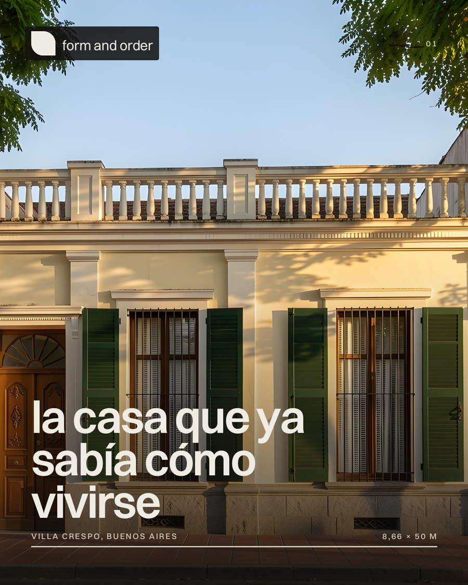
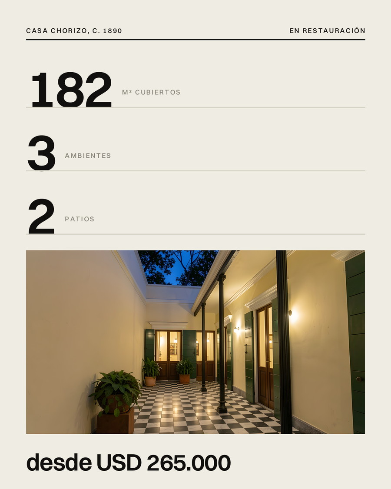
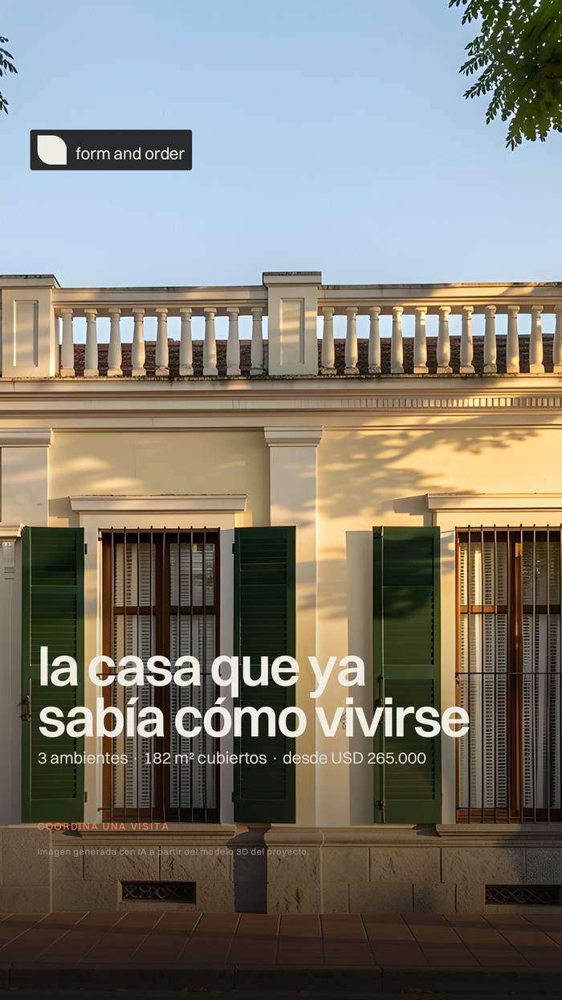
Two failures caught: a caption over a bright aerial, and a terracotta CTA on ink. The palette now carries a separate accent for dark backgrounds.
The price sat on top of the AI disclosure on the link card. Contrast and safe zones both passed. Only an overlap rule sees that.
The wordmark was drawn straight to the canvas, so nothing checked it — and it shipped at contrast 2.4 over a bright sky. It now rides on an ink chip and goes through the same checker as everything else.
"Image generated with AI from the project's 3D model", in the asset's language, placed by the layout engine. Not left to whoever writes the caption.
Cost model
Each stage appends to out/runs.jsonl: seconds, cache hit or miss, tokens, credits, dollars. The cost table is generated from that file — nothing is estimated after the fact.
| Stage | Backend | Runs | Cache hits | Time | Energy | $ |
|---|---|---|---|---|---|---|
| Export passes | local | 9 | 3 | 10 s | — | 0.0000 |
| Render | Comfy Cloud | 29 | 0 | 147.0 GPU s | — | 0.1425 |
| Render | local ComfyUI | 13 | 1 | 1552 s | 15.4 Wh | 0.0015 |
| Upscale | local ComfyUI | 6 | 0 | 543 s | 7.5 Wh | 0.0008 |
| Library crops | local | 8 | 0 | 2 s | — | 0.0000 |
| Total — 7 approved pieces → 28 deliverable files | 0.1450 | |||||
63 seconds of a 6 GB laptop GPU against about 4 seconds of a 96 GB cloud GPU, on the same work. Local stays useful as the free draft tier and for upscaling; the cloud is for the final pass. Comfy Cloud bills the RTX 6000 Pro at $3.49/h = 736.39 credits/h, so a warm render is 0.86 credits ≈ $0.004.
Passes are content-addressed on the scene spec, the camera, the lighting and the scene source code. Change a prompt and nothing re-renders; move a window by 10 cm and exactly the affected cameras do. A re-run of the exporter is three cache hits in about zero milliseconds.
Plug & play
The pipeline is a ComfyUI node pack plus a repo. Below is the path a new user follows today, and — honestly separated — what is still missing for it to be a one-click install from the ComfyUI Manager.
The pack is a thin wrapper: a loader in custom_nodes that points ComfyUI at the repo's comfy_nodes folder, so one checkout serves both the graph and the command line.
git clone https://github.com/<user>/casa-accelerator
cd casa-accelerator && npm install # Three.js scene + headless exporter
python -m venv .venv && .venv/Scripts/pip install -r requirements.txt# ComfyUI/custom_nodes/casa-accelerator/__init__.py
import sys; sys.path.insert(0, r"<path-to>/casa-accelerator/comfy_nodes")
from casa_accelerator import NODE_CLASS_MAPPINGS, NODE_DISPLAY_NAME_MAPPINGSThe gate needs open_clip_torch and pyiqa. Install them with --no-deps: both want to pull their own torch build, which will happily replace the CUDA build ComfyUI is running on.
<ComfyUI-python> -m pip install --no-deps open_clip_torch pyiqaAll of them are commercial-use licences — see the rights table below. Nothing in the pack downloads models for you, on purpose: model provenance is something the user should choose.
| File | Folder | Licence |
|---|---|---|
| RealVisXL V5.0 fp16 | models/checkpoints | openrail++ |
| SDXL-Lightning 8-step LoRA | models/loras | openrail++ |
| ControlNet Union SDXL Promax (xinsir) | models/controlnet | Apache 2.0 |
| RealESRGAN x4plus | models/upscale_models | BSD-3 |
Everything the pipeline knows about the project is configuration, not code:
Load workflows/ui/casa-master.json from the ComfyUI sidebar. The run renders the 3D passes, generates, gates, upscales, writes and validates the copy, lays out the asset and appends a line to the run log. For batches, the same graph is driven headlessly:
python pipeline/render.py --camera street --style restored --gate 3
python pipeline/post.py --post casa-larga-1408 --langs es en pt
python pipeline/cost_table.py # regenerates docs/costs.mdComfyUI's partner nodes bill against a Comfy credit balance, separate from a Cloud plan, and the auth token is attached by the frontend — so a prompt queued straight against the HTTP API comes back Unauthorized even when you are signed in. Run those from the app window, or swap the node for any other LLM node: the prompt builder and the validator do not care which model answers, as long as it returns the JSON object.
What is in place, and what is not, for publishing to the ComfyUI Registry so the pack installs from the Manager by name. The packaging is done; what remains is account-side — a publisher handle, an API key stored as REGISTRY_ACCESS_TOKEN, and a version bump to trigger the action.
| Piece | State | What is needed |
|---|---|---|
| Node pack, stable node IDs and display names | done | Seven nodes under one category, thin wrappers over the shared modules. |
| Example workflows in the repo | done | API and UI formats, both committed, both current with the nodes. |
| Run log and cost table | done | Generated from the log, not written by hand. |
| Root entry point, so a clone into custom_nodes just works | done | An __init__.py at the repo root re-exports the pack's mappings — no loader stub to write by hand. |
| pyproject.toml with Comfy Registry metadata | done | Name, semantic version, licence, repository, publisher ID and the ComfyUI version floor, plus a .comfyignore and a GitHub Action that publishes on a version bump. |
| Dependency manifest for the pack | done | The root requirements.txt carries nothing that pulls torch; the metric libraries live in requirements-dev.txt and the gate degrades to geometry + colour with a readable reason when they are absent. |
| Node-level tests in CI | missing | Load the pack headless, run the graph on a fixture scene, assert the gate's numbers against stored values. |
| Model bootstrap | missing | A script that fetches the four models with checksums, or Manager model-list entries. |
| Node.js dependency | partly | CasaRender3D shells out to a Playwright exporter that needs Node and a Chromium-family browser. Packaging a pre-baked GLB path would remove that for users who bring their own 3D file. |
| Windows-only paths | partly | Paths are resolved from the repo root, but only Windows has been exercised; the exporter's browser channel is hard-coded to system Edge. |
Rights & risks
An AI image that adds a balcony to a listing is a problem for the developer long before it is a problem for a designer. That is why the geometry check is the first gate and not the last, and why borderline images go to a review queue with the reason recorded next to them.
Model licences were chosen for commercial use: RealVisXL V5 (openrail++), xinsir ControlNet Union (Apache 2.0), Real-ESRGAN (BSD-3), Z-Image Turbo and its Fun ControlNet (Apache 2.0), FLUX.2 klein (Apache 2.0). Two popular options were deliberately excluded: 4x-UltraSharp (CC BY-NC-SA) and FLUX.1-dev (non-commercial).
The typeface is Switzer under the Fontshare licence, commercial use allowed. The brand mark is drawn from code; the visual language is generic modernist; no existing studio's identity is reused. The developer and the project are invented.
Copy is constrained by the fact whitelist, and the validator rejects any number that is not in the project's data. Every published asset carries its AI disclosure, stamped by the layout engine in the asset's own language.
Limitations